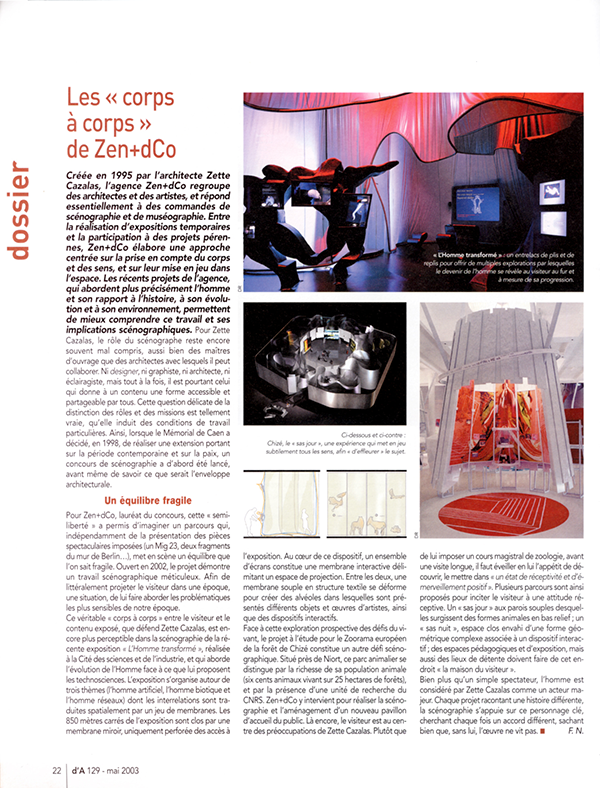

Jean-christophe Galmiche
reportages
plante photographique
divers
information
bio
publications
expositions / reportages
liens
contact
Presse
AMC une année d'architecture
, maison des services publics, Novae architectes, décembre 2006
(PDF)
AMC intérieurs
, Agence de mannequin Crystal, décembre 2005
(PDF)
AMC n°123
, Informatique espaces d'images, mars 2002
(PDF)
AA n° 340
, Guerre et Paix : le Mémorial de la Paix à Caen, mai & juin 2002
(PDF)
AA n°341
, Ecce homo Cité des Sciences et de l'Industrie, juillet août 2002
(PDF)
ARCHINEWS
, Espaces culturels, mars 2002
(PDF)
ICONA n°12
, Paris Rive Gauche, décembre 2002
(PDF)
LE MONITEUR n°130 une année d'architecture
, Unité co-sectoriel psychiatrique, janvier 2003
(PDF)
D'A n°129
, Les "corps a corps" de Zen+dCo, mai 2003
(PDF)

Les cahiers techniques du bâtiment n°129
, Développement durable, mai 2008
(PDF)